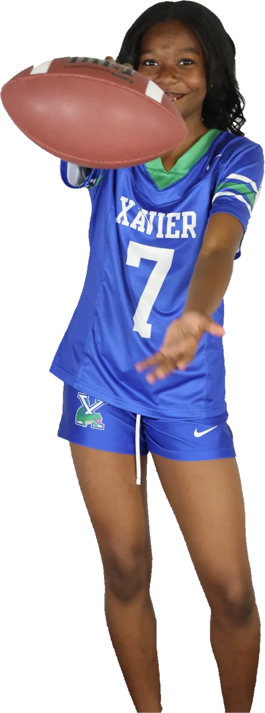
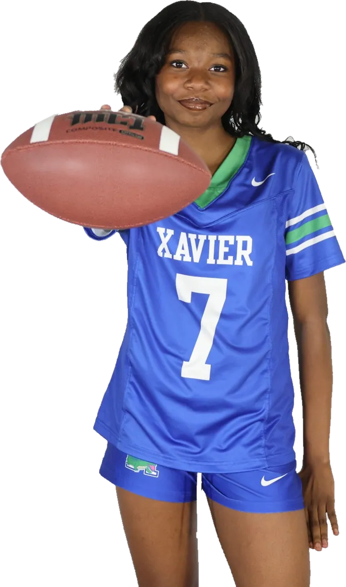
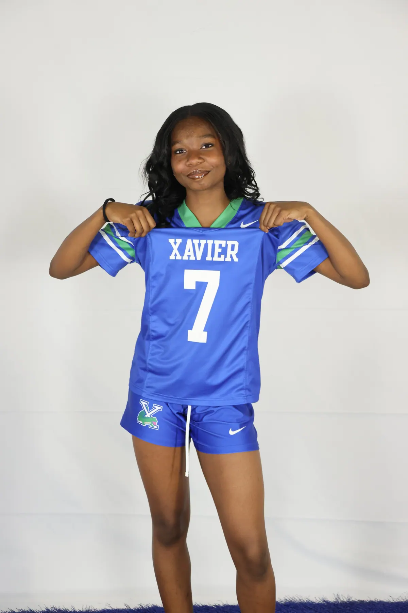
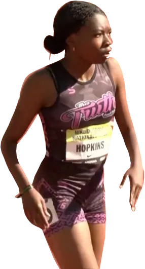

Seat 7 · Fall
The pass rusher
Xavier Gators flag football. Twelve sacks and 78 punt-return yards in her first five games of 2026, by the family's count; MaxPreps lists 10 sacks.
Sprints · Long jump · Flag football
National champion in the long jump at thirteen. Xavier College Preparatory, Class of 2030.
Contact the family

5.17 m
Girls 13–14 long jump. USATF National Junior Olympics, July 25, 2025. First place.
At the 2025 USATF National Junior Olympics, nobody in the girls 13–14 long-jump final went farther than L Hopkins. She was thirteen, and she had not started high school.
Since then: two bronze medals at New Balance Nationals Indoor, the No. 1 long-jump mark in Arizona, and fourth in the country in the Nike Outdoor Nationals 100 m final. She runs for Tha Truth Track Tribe, and rushes the passer for the Xavier Gators in number 7.
Every meet links to its official result or ranking.
| Date | Destination | Event | Mark | Status |
|---|---|---|---|---|
| 06·27·26 | Arizona No. 1 · USATF Region 10 No. 1 | 100 m | 12.08 | Ranked 1st |
| 06·22·26 | Nike Outdoor Nationals final | 100 m | 12.08 | 4th |
| 06·13·26 | USATF Arizona Junior Olympics | 200 m | 25.58 | 1st |
| 04·11·26 | Phoenix Invitational, Arizona's No. 1 mark | Long jump | 5.47 m | Ranked 1st |
| 03·14·26 | New Balance Nationals Indoor | 60 m | 7.59 | 3rd |
| 03·12·26 | New Balance Nationals Indoor | Long jump | 5.28 m | 3rd |
| 07·25·25 | USATF National Junior Olympics | Long jump | 5.17 m | Champion |
| 06·19·25 | Nike Outdoor Nationals final | 100 m | 12.30 | 3rd |
| 06·15·25 | Arizona Junior Olympics, meet record | 100 m | 12.27 | 1st |
| 04·26·25 | Pioneer Meet, meet record | Long jump | 5.22 m | 1st |
Full history on Athletic.net and MileSplit. 5.47 m is 17 ft 11.5 in.
Board 0.00 m
Arc shapes are drawn for scale. The landing marks are her official results.

Seat 7 · Fall
Xavier Gators flag football. Twelve sacks and 78 punt-return yards in her first five games of 2026, by the family's count; MaxPreps lists 10 sacks.
Class of 2030 · All year
A freshman at Xavier College Preparatory in Phoenix. The track and the field come after the school day, not instead of it.

Tha Truth Track Tribe · Spring
Sprints and long jump. Best marks: 12.08 in the 100 m and 5.47 m in the long jump.
Boarding pass
For coaches, recruiters and sponsors. Your message goes to L's parent, not to her phone.